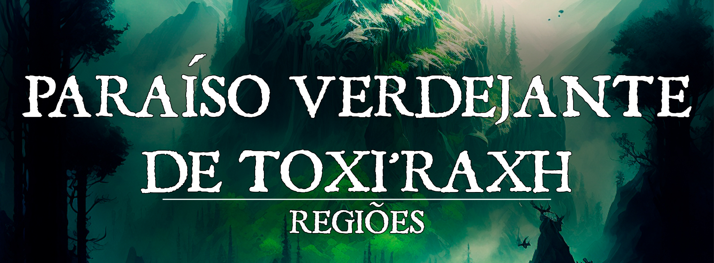

Paraíso Verdejante de Toxi'raxh
[p]!!! info "" “Apenas uma mordida é o suficiente para que encontre paz. Junte-se ao tesouro!”
Descrição
O extremo do continente conta com terras completamente devastadas, desertos com platôs e ravinas, terras tocadas pela própria corrupção, tempestades de areia, terrenos e até mesmo atividade vulcânica constante, e em meio a toda essa catástrofe do sul de Pheros, há uma península tomada pelas mais verde mata. O Paraíso Verdejante é uma terra tomada pela flora mais viva, bela, próspera e suculenta, onde inúmeros povos costumam almejar tomar posse pelos recursos naturais tão ricos em meio ao caos da terra árida, contudo essa terra já possui dono. O Paraíso Verdejante é território de um velho, poderoso e extremamente malicioso dragão verde, Toxi’raxh, o qual tomou todo o território como seu tesouro, incluindo o povo que lá habita e servem de seus adorados, os Dracofágos.
Geografia
Paraíso Verdejante de Toxi'raxh.jpg|Geografia
{kind=link}
O Paraíso Verdejante, como diz o nome, é uma obra de beleza natural estonteante. Onde grandes árvores crescem próximas, formando uma densa floresta com inúmeros rios e bacias, uma flora rica contando com fungos, frutas e ervas que carregam ricas propriedades alquímicas e, também, sabor, mas com a principal planta que cresce aos montes na região toda sendo a Lótus Dracônica, uma lótus de cor verde esmeralda e que emana um brilho de mesmo tom. No centro da mata há uma coalizão de montanhas, com o pico mais alto possuindo ruínas que já foram, a muito tempo, tomadas por flora e vida selvagem, e onde também é dito ser o covil de Toxi’raxh. Por fim, a região toda é tomada por uma leve névoa esverdeada e venenosa, da qual apenas criaturas imunes a veneno conseguem sobreviver, algo que os Dracofágos descobriram ser um dos mágicos efeitos da Lótus Dracônica, tornando-os imune à agressão da terra, e apenas aumentando o desejo de adoração ao Ancião Verde. O local é extremamente quente, com chuvas torrenciais nas estações de calor e secura nas de frio.
Governo
O Paraíso Verdejante é governado pela presença do dragão verde ancião, Toxi’raxh. Para os dracófagos, ele é seu senhor supremo, um chefe-guerreiro, uma divindade em terra e seu patrono, mas o ancião não é apenas um ser poderoso, ele na verdade é um governante astuto e malicioso, traços oriundos de sua mais natural essência como o cromático mais articulado. O governo do Ancião Verde não conta com conflitos civis, não conta com competidores, apenas ameaças externas de povos inferiores que desejam seus tesouros e território, tendo assim todos como seus inimigos e ordenando que qualquer ameaça externa seja exterminada. Muitos poderiam dizer que o governo de Toxi’raxh é tirânico, e não estaria de todo errado, mas como o dragão governa com a adoração de seu povo, mantendo a paz com sua presença e os ritos sugeridos por ele próprio, assim, os únicos que são verdadeiramente oprimidos são os que tentam tocar as posses do ancião.
Caráter
No geral, estrangeiros não são bem vindos no Paraíso Verdejante, a menos que convidados pelo próprio ancião, ou tragam tesouros e oferendas ao mesmo, pois em qualquer outra situação os dracofágos vão capturar qualquer estranho e levá-lo como presente a seu senhor, deixando-os incapacitados para se tornarem, na maioria dos casos, refeição do ancião. Em outros casos, normalmente quando capturados pelas Crias Dracônicas, estes são razoavelmente bem recebidos, servindo até mesmo refeições aos estranhos, mas tudo isso com a intenção de fazê-los consumir da lótus dracônica, o que caso seja negado, leva à atitude violenta habitual. O Ancião Verde desgosta estranhos e visitas má intencionadas, apesar de manter sua natureza cromática bem articulada, sua idade o faz preferir a solidão.
População:
Os dracofágos são constintuídos por raças que, em sua cultura, tendem a naturalmente adorar os grandes dragões, mas que com o tempo tiveram essa adoração se tornando algo vicioso, tal como fazendo com que outros seres que tentassem habitar o Paraíso Verdejante acabassem, também, criando um estranho senso de vínculo com o Ancião Verde. Dessa forma, a população se divide em quatro grandes tribos que, juntas, prestam suas oferendas e adoração a Toxi’raxh, estas sendo: As Crias Dracônicas, os Sacerdotes do Grande Verde, os Eternos Lacaios e, por fim, Os Carniceiros do Ancião. Essas quatro tribos costumam se dividir por raça, evitando mesclas, não por repúdio, mas por inveja de uma para com a outra, sempre tendo a ambição de conseguirem agradar mais o Ancião Verde, a diferença racial é, em mesma ordem, separada em: Draconianos, Yuan-tis, Kobolds e Povos-lagarto. Outros seres humanóides que invistam contra, ou buscando habitação no Paraíso Verdejante, acabam logo sendo capturados e oferecidos ao ancião como presente ou, se acabam por consumir da terra, se transformarem em dracofágos. * As Crias Dracônicas:Formados pelos draconianos, o povo que carrega essência dracônica e, por isso, acaba sofrendo alterações físicas e mentais, tem uma cultura mais aberta, pois em sua maioria todos eles se tornando dracofágos pelo consumo da lótus e bênçãos de Toxi’raxh, e não por uma descendência direta. Eles são conhecidos por diferentes tamanhos e constituição, tal como por sua devoção ser algo vicioso, mas não tão natural quanto às restantes tribos. Eles são vistos, pelas demais, como os ‘restos’ que o Ancião Verde permite viverem no Paraíso Verdejante por pena, devido à verossimilhança que carregam na essência das lótus dracônicas. Para eles, o consumo da lótus é obrigação, pois sem temem perder as bênçãos de Toxi’rath se deixarem de consumir a planta, mas isso não é ligado apenas ao lado ambicioso que a essência do dragão verde dá a eles, mas também por um terror imenso de, com isso, perderem o vínculo com o seu senhor. *** Os Sacerdotes do Grande Verde: A tribo formada pelos yuan-ti que abandonaram a adoração em nome de M’nzog ou qualquer outra deidade para apenas nutrir uma doentia fé em nome de Tori’raxh. Os sacerdotes do grande verde carregam os costumes da espécie, o repúdio aos humanos, a hierarquia serpentina, mas alterando que todo foco de seus rituais, sacrifícios e mais pura devoção é em nome do Ancião Verde. Eles são obcecados pelo dragão, servindo a ele como mestres de uma arcana misteriosa e nefasta, fazendo rituais horripilantes para agradar seu patrono. Para essa tribo o consumo da lótus é feito desde filhotes, sendo uma dádiva semelhante a um batismo e, ao longo das diversas reuniões religiosas diárias que ocorrem dentro da tribo, sempre há o consumo das pétalas da lótus como parte do rito. *** Os Eternos Lacaios: A tribo formada pelos kobolds, a raça que foi criada pelos deuses do panteão Dovahoss para servirem seus filhos, os dragões. No extremo passado os kobolds tinham um poder muito maior do que hoje, após as guerras entre dragões, os conflitos no panteão e a quase exitinção de seus senhores, que abandonaram a terra, estes ficaram perdidos, com exceção dos Eternos Lacaios, pois após a guerra Toxi’raxh se recusou a abandonar seu covil e tesouro, com isso também nunca tendo abandonada seus leais servos. Os membros dessa tribo são formados por uma enorme variedade kobold, todos tomados pelos tons de verde em suas escamas, como reação à essência do ancião e pelo consumo da lótus, o qual a tribo faz sem religião ou obrigação, é apenas natural para eles, principalmente por ter sido um comando de seu senhor, então eles sequer questionam, apenas o fazem. Eles são, de certa forma, os menos poderosos dracofágos, mas são muito numerosos e carregam uma lealdade cega ao Ancião Verde. *** Os Carniceiros do Ancião:** O povo-lagarto foi acolhido por Toxi’raxh após uma violenta luta, onde inúmeros membros do povo foram tenebrosamente destroçados pelo poder do Ancião, assim o reconhecendo como verdadeiro mestre. Eles mantém suas raízes com rituais bizarros à carne, tanto seu consumo de outras criaturas, quanto do canibalismo em ritos de passagem de falecidos, sendo úteis ao Paraíso como carniceiros e, principalmente, como violentos guerreiros que enfrentam os mais perigosos invasores. O consumo da lótus dracônica é visto como um fortalecimento, sendo consumida com frequência para que possam sempre manter a força do Ancião Verde consigo, e normalmente até mesmo consumindo grandes quantidades de lótus antes de irem ao combate. É bastante comum que membros dessa tribo carreguem pétalas de lótus consigo, pronto para devorá-las em frente a qualquer inimigo que mostre-se um pouco mais forte que o esperado. Sua lealdade ao Ancião é oriunda dos costumes tribais, onde o mais forte reina, e Toxi’raxh é, sem dúvida, o mais forte rei do Paraíso Verdejante.
Cultura
Cada tribo tem uma cultura particular própria, mas no geral todos giram ao redor da adoração ao Ancião Verde e proteção do Paraíso de seu senhor. Tal como, o consumo das Lótus Dracônicas, que variam em cada tribo o motivo pelo qual deve-se comê-las.
Cada tribo tem suas festividades e ritos, uns comemoram de maneira sacra a existência de Toxi’raxh, outros fazem festas com lutas para entreter o ancião, sendo uma gama de ritos e festas muito únicas e diferentes. O grande fator comum em termos de rituais é a entrega de presentes e tesouros para o ancião, sendo um rito de qualquer dracofágo levar seus tesouros até a entrada do covil do ancião e sinalizar sua presença e interação, podendo apenas levar mais a fundo no covil com permissão do mesmo, caso contrário o tesouro deve ser deixado às portas e o dracofágo deve retirar-se.
Em termos religiosos, apesar de a maioria das tribos carregarem apenas o Ancião Verde como sua quase divindade, no Paraíso Verdejante a fé pertence ao panteão Dovahoss, mas majoritariamente à Rainha Dragão, Tiamat, afinal de contas, ela não deixa de ser, perante os olhos simples das tribos, a matrona de seu senhor.
Conflito
O Paraíso Verdejante tem inimigos de todos os lados, sendo infinitos os conflitos dessa terra. A magocracia de Neth’hare, o governo de guerra de Delphos e os nômades ishaarianos, todos tem desejos pelos recursos naturais e mistérios do Paraíso Verdejante, e portanto todos buscam invadir e agredir a terra. Entre eles todos, contudo, o mais frequente conflito é para com as tribos nômades, que além de invadirem a terra, carregam conhecimentos e armas capazes de ferir dragões, assim sendo os inimigos naturais dos dracofágos. Em todos os conflitos, contudo, o Ancião Verde não tem ido em confronto, com exceção de uma vez que navios neth’arios buscaram atracar no paraíso e foram recebidos pela fúria de Toxi’raxh.
Há, dentro do paraíso, algo próximo de conflitos entre as tribos, mas não uma guerra entre si, mas a constante busca por serem a tribo mais útil e, com isso, mais favorecida pelo Ancião Verde.
Economia
Não há relações comerciais de dentro para fora e vice-versa, no máximo há escambo entre os locais e, no caso de saques e troféus, todos são levados ao covil de Toxi’raxh, onde lendas contam haver um dos maiores tesouros da humanidade.
Poderio Militar
O Paraíso Verdejante conta com tropas de dracofágos, formadas por feiticeiros yuan-ti com poder assustador, tendo o próprio Ancião Verde como seu tutor, buscando poder no panteão dracônico, normalmente Tiamat, também conta com os furiosos e fanáticos povos-lagartos, que lutam com uma ferocidade que os faz valer por dez homens, não suficiente há os kobolds, ardilosos e geniais que criam inúmeras armadilhas e possuem uma coragem e tática de grupo formidável com seus números absurdos e, diferente do habitual, organizados, e por fim tendo os draconianos como uma força de poder misterioso, pois entre eles há conjuradores, bravos guerreiros e ardilosos assassinos. Isso tudo, além das monstruosidades dracônicas que protegem o território e, obviamente, o próprio Ancião Verde.
NPCs Presentes
Toxi’raxh, o Ancião Verde [Dragão Verde Great Wrym - 21.522 anos - Leal e Mau - Druida dos Sonhos 20]: Toxi’raxh é um dos mais velhos seres ainda vivos no plano material, tal como dentre os membros de sua raça, mas mais do que isso, ele também é um dos seres mais consciente e sagaz. Sua idade avançada não é apenas pelos motivos das bênçãos que foi agraciado, mas também pela sua capacidade de saber como agir, que lutas lutar e quando se resguardar. Em sua juventude ele foi muito mais ativo, tendo percorrido os povos que dominavam Pheros e fazendo parte de inúmeros conflitos, sempre disfarçado de formas animais ou humanoides, nunca revelando sua natureza, e nesse período ele criou uma consciência sobre as relações mortais que nenhum conhecimento hereditário poderia tê-lo dado. Hoje, já muito mais velho, o Ancião Verde rege seu território como seu tesouro, criando adoradores a seu nome que fazem tudo por si, assim vivendo com o melhor que poderia, usando de sua malícia e experiência para manter tudo como deve ser. Ele, apesar de não mostrar-se, é tão maligno quanto qualquer outro dragão, assim como traços dos cromáticos verdes são comuns a ele, sendo então vaidoso, cínico e ambicioso, mas hoje ciente de que sua idade, e o retorno da presença dracônica, já não lhe permitem mais erguer-se contra o mundo.
O Ancião Verde costuma navegar seu território em outras formas, buscando não chamar muita atenção de seus fanáticos servos, portanto deve-se se atentar no paraíso para qualquer besta com olhos serpentinos e amarelados. Quando outros humanoides invadem o paraíso e chocam-se com Toxi’raxh, há uma grande chance dele dar espaço ao diálogo, se divertindo com sua presa, tal como se informando mundo afora. Ele toma apenas uma forma humanoide, a de um cavaleiro grande e forte, com armadura feita de folhas e galhos, um elmo que esconde o rosto revelando apenas olhos amarelados e portando um machado e escudo, o qual aqueles que se afundam em histórias podem reconhecer como o Cavaleiro em Mantos Verdes de histórias conflituosas do passado das civilizações.
Paraíso Verdejante de Toxi'raxh - Toxi'raxh.jpg | Toxi'raxh, o Ancião Verde Paraíso Verdejante de Toxi'raxh - Toxi'raxh, o Cavaleiro de Mantos Verdes.jpg | Toxi'raxh, o Cavaleiro em Mantos Verdes
{kind=link}
{kind=link}
Zsissza Filha-do-Sibilar [Yuan-ti Abomination - Neutra e Má - 42 anos - Feiticeira Dracônica (Verde) 18]:A líder da tribo dos Sacerdotes do Grande Verde, Zsissza é uma vaidosa yuan-ti que leva os costumes da raça ao extremo, mas mais do que a própria raça, leva a adoração ao Ancião Verde como dever vital. Ela rege os outros sacerdotes e zela porsua tribo, tal como zela pelo Ancião, levando diversas oferendas e respondendo a seus chamados de imediato, sendo uma das chefe de tribo mais convidada ao covil do Ancião Verde. Alguns suspeitam que para cuidar de ferimentos, outros que para ensiná-la mais de maiga e ainda há quem julgue haver uma relação carnal entre o Ancião e sua sacerdotisa. Ela, em sua vaidade, é uma poderosa conjuradora do poder dracônico ensinado por Toxi’raxh, ela é, apesar de fanática, muito culta e com malícia por detrás de seus discursos, sendo uma criatura de sangue e coração frio para com qualquer outra criatura, incluindo os outros dracofágos e até mesmo os membros de seu povo que nasçam com traços mais humanoides. Contudo, para com os filhos de linhagem pura ou que nasçam com traços do Ancião Verde, a Filha-do-Sibilar passa a cuidar como sua própria prole.
Paraíso Verdejante de Toxi'raxh - Zsissza Filha-do-Sibilar.jpg | Aparência
{kind=link}
Vahrk’tan, o Guardião Verdejante [Dragonborn - Leal e Mau - 50 anos - Patrulheiro Drakewarden 18/Guerreiro 1]:Responsável por rondar as divisas por terra do Paraíso Verdejante, Vahrk’tan é um poderoso caçador focado no uso de armas de haste. A história por detrás dele conta que, no passado, ele foi um nômade ishaariano oriundo da tribo de matadores de dragões, mas que acabou consumindo muitas lótus dracônicas e acabou sendo possuído pela essência de Toxi’raxh, perdendo seu verdadeiro nome e tendo sua memórias do passado borradas pela conexão com o Ancião Verde, como já ocorreu com muitos antes dele. O diferencial é que, quando um membro nômade ele era conhecido por ser uma dos melhores guerreiros com seu estilo de arma, sendo um perigoso e mortal guerreiro, o que só o tornou mais poderoso com o toque dracônico. Ele rege a tribo das Crias Dracônicas, que guardam a região do território ishaariano, muitas vezes partindo em investidas acompanhado apenas de sua companheira dracônica, uma pantera deslocadora que, como ele, acabou presa pela lótus dracônica ao Ancião Verde. O Guardião Verdejante é uma figura centrada e convicta de seus deveres, sua lealdade à terra e a Toxi’raxh é inegável, e por isso ele não teme desafiar e ceifar a vida de qualquer que seja o inimigo que busque invadir o paraíso, mas sempre com uma boa estratégia, afinal de contas, a essência do manipulador mestre da malícia corre em suas veias.
*** Hraath'kal [Drake Companion com Traços de Pantera Deslocadora]:** A companheira do Guardião Verdejante é temida pelos contos ishaarianos, sendo conhecida como “A Duplicata Verde”, muitas vezes sendo ela um sinal da presença do guardião, e isso a faz mais assustadora do que sua presença por si.
Paraíso Verdejante de Toxi'raxh - Vahrk’tan, o Guardião Verdejante.jpg | Aparência Vahrk’tan Paraíso Verdejante de Toxi'raxh - Hraath'kal.jpg | Aparência Hraath'kal
{kind=link}
{kind=link}
Esmeraldine Asas-Ordeiras [Kobold Alada - 24 anos - Leal e Mau - Barda do Valor 14]:Diferente dos outros, os kobolds não são super poderosos, na verdade eles são ardilosos, numerosos e, diferente de em outros lugares, no Paraíso Verdejante, eles são organizados. Esmeraldine é a responsável por essa orgnaização, e antes dela seu pai, antes dele sua avó e então sucede uma linhagem de verdadeiros kobolds abençoados pelo Ancião Verde com o domínio da arte capaz de controlar corações e guiá-los. Ela é uma figura muito bem humorada e adorável, mas que não pode ser desmerecida em combate, pois apesar de ser pequena, ela é formidável. Contudo, seu verdadeiro poder está justamente em conseguir sua tribo a fazer o que é necessário, guiá-los a tarefas e fazê-los cumprí-los, assim sendo não ache-a misericordiosa, pois ela não é. Se você falhar em suas tarefas, será punido, podendo ter uma punição leve como passar um dia sem refeição até algo mais cruel que cabe a ela julgar no momento. Sua tarefa, tal como a de sua tribo, é servir ao Ancião Verde, sendo eles que organizam seu covil quando o mesmo permite, eles quem fazem as armadilhas e construções em nome do mesmo e que são incúbidos das mais variadas tarefas, pois onde há natos guerreiros enfurecidos ou conjuradores grandiosos, há muitos números dispostos a ceder suas mãos para o serviço.
Paraíso Verdejante de Toxi'raxh - Esmeraldine Asas-Ordeiras.jpg | Aparência
{kind=link}
Shalan'tor, o Açougueiro do Ancião [Povo-lagarto - 31 anos - Caótico e Mau - Bárbaro Furioso 16/Guerreiro 1]:Nas regiões mais costeiras, onde os rios se unem ao mar, é onde as tribos de carniceiros habita, aguardando os ataques de inimigos que venham pelo mar, aproveitando as águas e densa mata para deixar seus alvos entrarem um pouco no território e então consumiram sua carne. O líder dessas cruéis criaturas é Shalan’tor, o mais sanguinário dos povo-lagarto que nasceu neste século. Um guerreiro formidável e feroz, usando uma enorme arma curva cujo corte causa necrose e envenenamento, sua força vem da fúria interna que ele canaliza e de sua vontade de ultrapassar a força do Ancião Verde. Conta-se que ele, em suas três décadas de vida, já desafiou o Ancião três vezes, em todas derrotado e quase morto, mas se erguendo com vida no final, se recuperando dos ferimentos e seguindo sua eterna luta de fúria para um dia ser capaz de superar Toxi’raxh, não por raiva ou ódio, apenas por uma conquista pessoal que poderia lhe tornar, na concepção do povo-lagarto, o novo chefe do Paraíso Verdejante. Ele é, honestamente, bastante ignorante e não muito inteligente, mas uma massa de poder bruto, sendo responsável pelas táticas que ele aplica à líder da tribo dos kobolds, Esmeldine Asas-Ordeiras.
Paraíso Verdejante de Toxi'raxh - Shalan'tor, o Açougueiro do Ancião.jpg | Aparência
{kind=link}
História de Origem
Na Era das Trevas:
Milênios de União
Durante todo o início do período da Era das Trevas, o território em que hoje encontra-se o Paraíso Verdejante, era apenas território dracônico, um dos vários ninhos de dragões protegidos para, justamente, permitir os filhotes crescerem sem serem afetados pelas guerras gigantes.
Na época o lugar era um dos pontos de maior zelo dos dragões, e por isso permanecia escondido e não afetado pela guerra. Entretanto, quando os gigantes trouxeram seu trunfo e destruíram todo o sul, transformando-o num deserto, o ninho foi também muito afetado e arruinado, restando apenas mortos e ovos destruídos, enterrados e regados pelas lágrimas e fúrias de inúmeros dragões.
O Conclave contra o Conselho
Quando os dragões venceram os gigantes, e uma guerra civil se ergueu entre a espécie, é dito que o Conselho Dracônico fez uso das ruínas do antigo ninho como uma de suas bases, sendo capaz de escavar os entulhos e encontrar, em seu interior, guardados pelo poder de Mithyrriel, a deusa materna do dragões, os ovos que deveriam estar destruídos, ou eclodidos. Com isso o conclave escolheu fazer uso dos ovos a seu favor, os que fossem ovos metálicos foram levados para outros locais mais seguros, enquanto os cromáticos foram destruídos, causando o que o evento chamado de “Lágrima de Mithyrriel”, onde todos os dragões responsáveis pelo vil ato foram aprisionados dentro das ruínas em um sono profundo. O único ovo restante foi um ovo de dragão verde, do qual viria a nascer o Ancião Verde.
A Reclusão Dracônica
Com o fim da guerra, com o Conselho Dracônico vitorioso, os dragões foram quase extintos. O conselho, formado por dragões metálicos e de gemas, tal como algumas outras espécies dracônicas, ergueram sua relíquia divina, o Coração de Darastrix'thair, e se buscaram abrigo fora de Pheros. Houve relatos de dragões que escolheram outras direções, principalmente dos cromáticos sobreviventes, tal como alguns se esconderam pela própria Pheros para se recuperar. Nesse período, entretanto, o ovo de onde Toxi’raxh eclodiu, dando início à sua vida em meio às ruínas onde outros dragões metálicos mais velhos que eles estavam aprisionados em sono eterno.
Origem da Serpente
Toxi’raxh nasceu diferente, quando deixou seu ovo o conhecimento hereditário que a raça dracônica divide, para ele, foi maior, como se ele não tivesse apenas aprendido o que seus descendentes poderiam lhe passar em conhecimento inato, mas também tudo que os dragões adormecidos à volta viveram também. Assim, desde jovem, ele soube dos conflitos, guerras, conclaves e povos, tal como soube dos poderes, maquinações e uma capacidade muito mais articulada que um mero filhote deveria ter. Suas primeiras décadas de vida envolveram a exploração das ruínas do ninho, e a absorção de todo conhecimento possível oriundo das mentes e sonhos que seus falhos algozes detinham.
Quando se tornou jovem, ele já era equiparado a um dragão adulto, não só em poder, mas em sabedoria. Ele manteve seus prisioneiros, garantindo que eles nunca acordaram de fato, presos em um túnel de sonhos e pesadelos que ele descobriu saber controlar. E, por fim, decidiu explorar, ver o mundo, entender sobre a terra que estava ascendendo, mas não poderia fazê-lo como dragão, pois chamaria demasiada atenção, e seus planos não envolviam agir maneira impensada e tomada pela maldade cega de seus primos cromáticos, não, Toxi’rath era muito mais engenhoso. Ele dominou a arte de alterar sua forma, primeiro para bestas e posteriormente para formas humanoides, assim assistindo os povos crescerem de perto.
A Serpente explorou muitos povos, guiou-os em conflitos e até mesmo lutou batalhas por eles, tendo marcado a história como O Cavaleiro de Mantos Verdes, conhecido por ter guiado inúmeros povos à vitória, apenas para no futuro vê-los cair e ter todo seu conhecimento e tesouros desaparecidos em suas ruínas, ou isso diziam os historiadores, enquanto a verdade é que todos os tesouros eram levados pelo dragão para seu covil, criando sua horda de tesouros infinitos. Quando já muito mais velho, o dragão sentiu a necessidade de retornar a seu covil, um mau presságio o tocou, pois seu poder era oriundo da terra, e ela tremia em desespero. A calamidade arcana ocorreu, a magia se tornou letal aos homens, e mais instável, com isso os dragões adormecidos passaram a despertar.
Toxi’raxh, ao retornar para seu covil, encontrou cerca de dez dragões, em sua maioria adultos, buscando se livrar das amarras criadas por ele, e uma verdadeira batalha sangrenta ocorreu. No fim, o Ancião Verde ergueu-se vitorioso, mas muito ferido, repousando em um sono que durou décadas, tempo no qual as carcaças dos dragões mortos apodrecem, e suas essências foram drenadas para o dragão verde.
Após seu despertar ele sentiu-se muito mais forte, mas também mais fraco. Sua força dracônica cresceu por um evento que ele desconhecia, mas sua magia perdeu poder, devido à Trama criada pelo deus da magia. Toxi’raxh já era um dragão muito velho, bem mais velho que a maioria dos anciões, com milênios de conhecimento e experiência, mas também, completamente fora de ser um dragão natural, talvez devido à bênção de Mithyrriel. Ele concluiu que estava cansado dos conflitos mortais, das mesmas e repetidas guerras e ruínas, e por isso, mesmo após despertar de sua recuperação, escolheu novamente adormecer.
O Paraíso
O Paraíso Verdejante foi criado pela presença e sonhos de Toxi’raxh, feito à sua vontade em meio à terra arruinada, crescendo matas, névoas envenenadas e uma flor que seria capaz de criar servos a ele. Sua antiguidade e poder foi capaz de criar tudo isso, assim como povos foram se aproximando do local, alguns na verdade não se aproximavam, apenas já lá estavam, mas o ancião nunca notou, como eram os Kobolds, que silenciosamente mantinham seu dever como servos dracônicos, outros surgiram e se adaptaram, como os yuan-ti e povos-lagarto, mas todos fizeram algo em comum, se alimentaram das pétalas tão atraentes da Lótus Dracônica oriunda dos sonhos do Ancião Verde. Criando assim seus servos, seus súditos, seus adoradores e seus defensores. Por muito tempo as terras do paraíso foram atacadas por invasores, e por muito tempo as terras foram fortemente defendidas, consumindo seus inimigos, seja no termo literal ou pela absorção deles ao povo dracofágo, que após o consumo da lótus se tornaram o que foi nomeado draconianos.
Na Primeira e Segunda Era: Durante a Primeira Era, após milênios adormecidos, o Ancião Verde despertou de seu sono e foi recebido por tesouros, presentes e oferendas, fossem em ouro ou comidas. Ele então reconheceu o povo que se criou, e em sua malícia cromática, os abraçou como seu povo, seu tesouro. Desde então o velho dragão mantém-se em seu covil, sendo raras as saídas dos mesmo de dentro da gigantesca montanha do Pico Venenoso. Não tendo sido afetados pelas presenças que quase destruíram Pheros diversas vezes, enquanto isso, o povo cresceu firme nas terras, mantendo-se dentro de suas estranhas religiões e cultos, alguns foram necessários ser domados, como os povos-lagartos que foram destruídos inicialmente pelo Ancião Verde para reconhecerem-no como seu líder, mas no geral, o paraíso é uma terra pacífica para qualquer um que escolha aceitar o Ancião Verde como seu senhor e, uma vez que entrar, não tenha o desejo de deixar mais a terra.